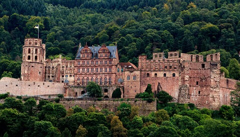

ドイツ旅行 2026
ノートの「ハイデルベルク 10:00、1日あり」の日。城、旧市街、哲学者の道を一日で回ります。
予約済み・決定済み
- ハイデルベルク 10:00 から丸一日（ノート）
- 宿泊：ハイデルベルク（2泊目）
- 翌 9/23 は 09:55 発でローテンブルクへ（別ページ）
流れ
- 10:00 コルンマルクトからケーブルカーで城 → 城庭・大樽・薬事博物館（〜12:30）
- 昼食 → 聖霊教会 → アルテ・ブリュッケ → 蛇の小道を登って哲学者の道（〜16:30）
- Hauptstraße で買い物 → 学生牢（時間があれば）→ 夕食
今日の出費
- シュロスチケット €11（ケーブルカー往復＋城庭＋大樽＋薬事博物館）
- 城内ガイドツアー +€6（任意）· 学生牢 €3（大学博物館・旧講堂との共通券）
- バス 33 片道 約€3（旧市街のホテルなら不要）
タイムライン
- 09:40コルンマルクト（Kornmarkt）のケーブルカー下駅へ。駅前のホテルならバス 33「Rathaus/Bergbahn」下車。窓口でシュロスチケット €11
- 10:00ケーブルカー下部区間（2分）で城駅へ。ハイデルベルク城：城庭からの旧市街とネッカー川の眺め、崩れたファサード、大樽（Großes Fass、22万リットル）、ドイツ薬事博物館。城内部（部屋）は+€6 の1時間ガイドツアーのみ。2時間半
- 12:30ケーブルカーで下りる（または城の下の「短い階段」Kurzer Buckel を徒歩10分で旧市街へ）。昼食は Marktplatz 周辺
- 13:45聖霊教会（Marktplatz、月〜土 11–17時、無料。塔は有料）。向かいの騎士の館（Haus zum Ritter、1592年）の外観
- 14:15Steingasse を北へ、橋門をくぐってアルテ・ブリュッケ。橋の猿の像（触ると幸運）。対岸へ渡る
- 14:35対岸で右へ、すぐ左の急な石畳「蛇の小道（Schlangenweg）」を15分登ると哲学者の道（Philosophenweg）。城と旧市街を正面に見る定番の展望台は登り切って左（西）へ数分
- 15:30哲学者の道を西へ歩き、テオドール・ホイス橋で戻る（合計1.5時間）。または来た道を戻る
- 16:30Hauptstraße（1.6km の歩行者天国）で買い物。学生の街らしい古書店とカフェ。学生牢（Studentenkarzer）は大学広場（Augustinergasse 2）、4〜10月 毎日 10:00–18:00、€3（大学博物館・旧講堂との共通券、割引 €2.50）
- 18:30夕食。Hauptstraße の学生酒場（Zum Roten Ochsen、Schnookeloch など）。ノートの「1日あり」なので夜はゆっくり
- 夜翌朝 09:55 発。荷造り。ローテンブルクのホテルの住所と、旧市街内の車両規制を確認
ハイデルベルク城 Schloss Heidelberg

- シュロスチケット
- 大人 €11、割引 €5.50。ケーブルカー往復（Kornmarkt ⇄ Schloss）、城庭、大樽、薬事博物館を含む
- 城内ツアー
- +€6（1時間、独語/英語）。城の部屋の内部を見たい場合のみ
- ケーブルカー
- 3〜10月 9:00–20:00、下部区間は10分ごと。上のケーニヒシュトゥール（標高568m）まで行く上部区間は別料金
- 写真
- 自由。薬事博物館内はフラッシュ不可
- 注意
- 9/20 のトレイルマラソンは前々日なので影響なし
市内の動き方 Heidelberg
- 駅 ⇄ 旧市街
- 2km。バス 33（Rathaus/Bergbahn 行き、20分間隔）か 20。徒歩なら25分
- 旧市街内
- 全部徒歩。Hauptstraße が背骨で、城・橋・教会はその周辺
- 切符
- VRN の単券 約€3。D-Ticket 可
公式サイトの確認（9/12 時点）
各施設の公式サイトで休止・改修・臨時休業の有無を確認した結果です。出発直前にもう一度、各リンク先を見てください。
| スポット | 状態 | 内容 |
|---|
| ハイデルベルク城 | 営業 | 公式：城庭・バルコニー・大樽は毎日 9–18時（最終入場 17:30）、薬事博物館は最終入場 17:40。閉鎖区画の案内なし。9/20 のトレイルマラソンは前々日で影響なし |
| ベルクバーン | 営業 | 公式ニュースに9〜10月の運休予定なし（年次点検は3月）。Molkenkur 駅の車椅子リフトが故障中のみ |
| 聖霊教会 | 営業 | 月〜土 11–17時、無料 |
| 学生牢 | 営業 | 4〜10月 毎日 10:00–18:00、€3（大学博物館・旧講堂との共通券）。以前 €4・火〜土と書いていたのは誤り |
写真のルール（共通） 教会・レジデンツはいずれも個人利用の撮影可、フラッシュ・三脚・自撮り棒は不可。ミサや礼拝中は撮影も見学も控える。新市庁舎の塔とダニエル塔は撮影自由。
画像の出典
写真はすべて Wikimedia Commons の自由ライセンス作品です。アニメの画面は著作物のため掲載していません。
出典：ハイデルベルク城 料金 · ベルクバーン シュロスチケット · 聖霊教会 · ベルクバーン アクセス
{kind=link}